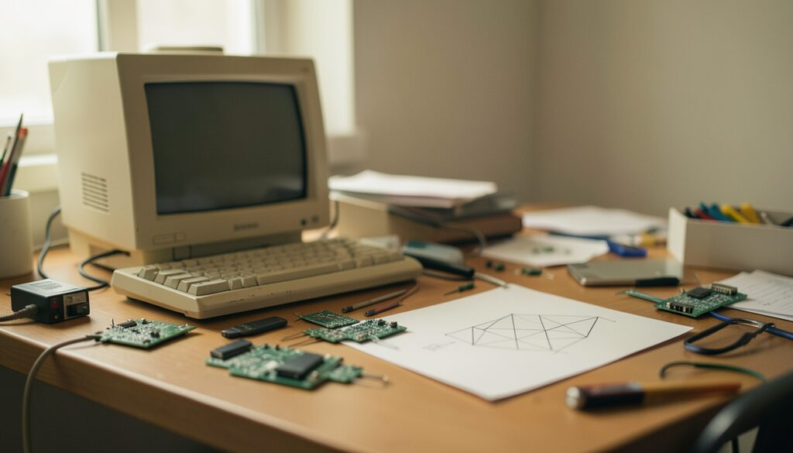
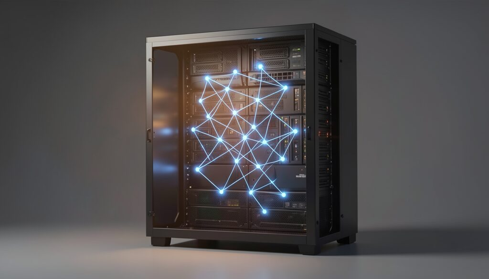
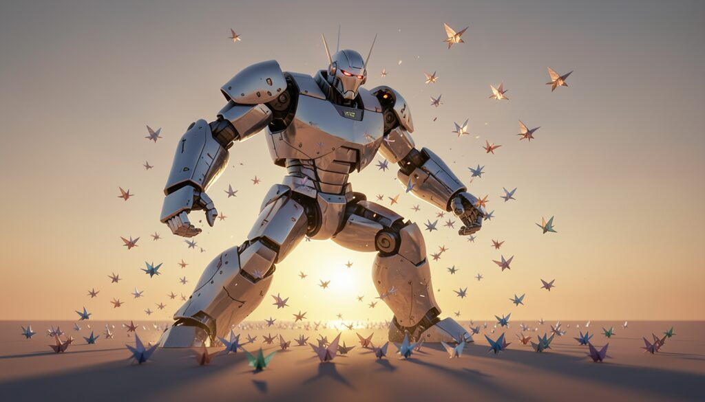
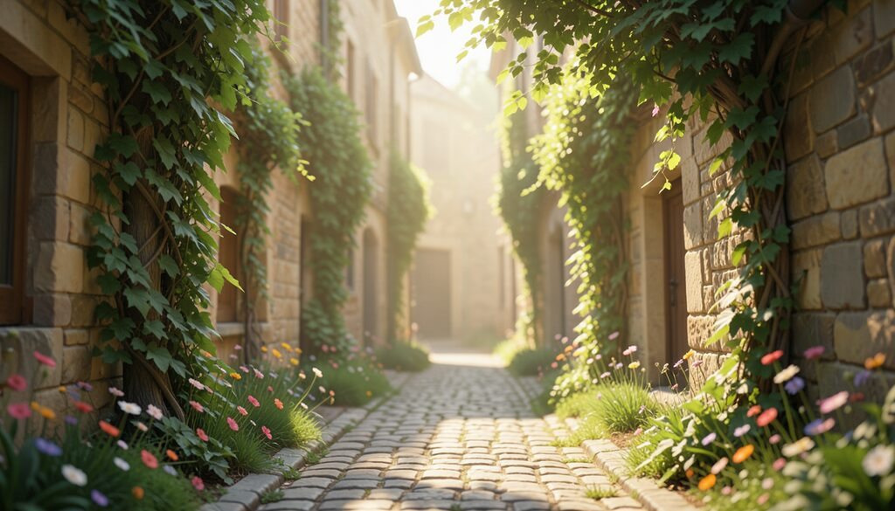

🎨 AI images, made on this Mac
Every background in the v0.3.0 video was generated locally. Ollama's gemma3:12b wrote each prompt from the scene text, and FLUX.2 Klein 4B painted it through mflux. No API keys, $0 per image.

🖼️ Gallery
📝 Prompt written by gemma3:12b
Warm, diffuse light illuminates a clean, modern home office desk. A laptop sits open, subtly glowing, amidst a few scattered, natural-toned notebooks and a ceramic coffee mug. cinematic, wide 16:9 composition, soft volumetric light, rich colour, clean minimal background, no text, no letters, no logos
📝 Prompt written by gemma3:12b
Soft, warm light illuminates a minimalist desk. A single, open notebook rests beside a glowing laptop displaying complex, branching code patterns. Subtle bokeh highlights dust motes. cinematic, wide 16:9 composition, soft volumetric light, rich colour, clean minimal background, no text, no letters, no logos

📝 Prompt written by gemma3:12b
Warm, diffused light illuminates a cluttered desk with a vintage computer, scattered circuit boards, and a half-finished sketch of a geometric shape. Cozy, slightly blurred. cinematic, wide 16:9 composition, soft volumetric light, rich colour, clean minimal background, no text, no letters, no logos

📝 Prompt written by gemma3:12b
Subtle, warm glow illuminates a stylized, interconnected network of glowing blue nodes within a dark, metallic server rack. Gentle volumetric lighting. cinematic, wide 16:9 composition, soft volumetric light, rich colour, clean minimal background, no text, no letters, no logos
📝 Prompt written by gemma3:12b
Warm, soft light illuminates a slightly open laptop on a wooden desk. A single potted succulent sits nearby. Gentle bokeh highlights the scene; cozy, minimalist, and quiet. cinematic, wide 16:9 composition, soft volumetric light, rich colour, clean minimal background, no text, no letters, no logos

📝 Prompt written by gemma3:12b
A colossal chrome robot, intricately detailed, struggles against a swarm of tiny, shimmering, origami cranes, backlit by a dramatic, low-angle sunset glow. cinematic, wide 16:9 composition, soft volumetric light, rich colour, clean minimal background, no text, no letters, no logos

📝 Prompt written by gemma3:12b
Sun-drenched cobblestone alley, overgrown with ivy and wildflowers. Warm, diffused light filters through leaves, highlighting textures of stone and petals. Soft focus, painterly style. cinematic, wide 16:9 composition, soft volumetric light, rich colour, clean minimal background, no text, no letters, no logos
📝 Prompt written by gemma3:12b
A single, softly glowing laptop sits on a wooden desk bathed in late afternoon sunlight. Dust motes dance in the light, hinting at quiet, automated processes. cinematic, wide 16:9 composition, soft volumetric light, rich colour, clean minimal background, no text, no letters, no logos
📦 What got installed
| Tool | Installed | Size | Status |
|---|---|---|---|
| 🎨 mflux | CLI via uv tool install mflux, with the FLUX.2 Klein 4B model | ~15 GB (Hugging Face cache) | ✅ used for every image here |
| 🦙 Ollama | x/z-image-turbo image model (Ollama's experimental image generation) | 12.8 GB | ⚠️ downloaded (12 GB), but Ollama 0.40.16 on this Mac says: image generation models are not currently supported |
| 🧠 Ollama LLM | gemma3:12b (already installed) writes the prompts | 8.1 GB | ✅ used |
| 🧠 LM Studio | No image model: LM Studio only runs language models. Its local server also asks for an API token, so Ollama wrote the prompts instead. | n/a | ℹ️ LLM only |
| 🔊 Kokoro | Docker, af_heart voice (already running) | 5.6 GB image | ✅ narration |
▶️ Reproduce
uv tool install mflux # FLUX.2 Klein 4B downloads on first run python3 tools/gen_images.py examples/demo.json examples/images # Ollama prompts + mflux images python3 -m simpligen examples/demo.json site/demo.mp4 # video with images, emojis, diagrams, Kokoro python3 tools/build_gallery.py # this page